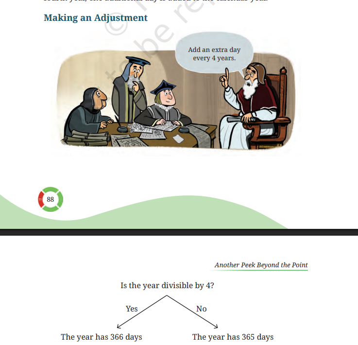
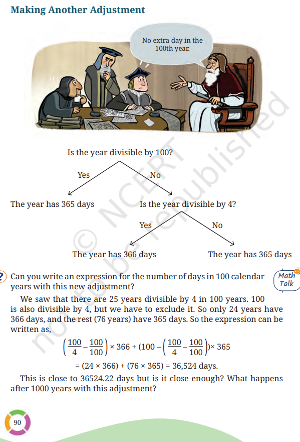

GRADE 7 · MATHEMATICSInspired by Ganita Prakash II
THE SUN
EARTH 01
ONE REVOLUTION365.2422 days
Not quite 365. That’s where our story begins.
Earth-time elapsed: 0.0 / 365.2422 days
Orbital illustration · not to scale
01 — THE EXTRA FRACTION02 — THE RULE03 — THE EXCEPTIONS↓
01 / THE MATHEMATICS
A little time. A big difference.
Imagine the calendar finishing its 365th day while Earth still needs 0.2422 day to complete its journey. What happens if we keep ignoring that small fraction? Try it below.
EARTH’S APPROXIMATE YEAR
365.2422
365calendar days
+
0.2422extra day each year
That’s about 5 hours, 49 minutes of extra time.
WATCH THE DIFFERENCE GROWWithout leap days
0.9688extra days after 4 years
1 year100 years
0.2422 × 4 = 0.9688 days
After four years, the missing time is almost a whole day. Adding February 29 is our first adjustment.
FIRST, THINK ABOUT 100 YEARS
A fraction becomes 24 days.
If every year had only 365 days, the missing time would keep growing. Our calendar dates would gradually drift relative to the seasons.
0.2422 × 100 = 24.22days missing after 100 years, without leap days
BUILD THE RULE, ONE ADJUSTMENT AT A TIME
Why four isn’t the whole story.
Follow the same sequence as the textbook: try a correction, compare the totals, then improve it.
01
FIRST ADJUSTMENT
Add one day every four years.
Four lots of the extra 0.2422 day make 0.9688 day—almost a full day. So the first idea is to make every fourth year 366 days long.
Year 1365Year 2365Year 3365Year 4366+1 day
Calendar over 4 years4 × 365 + 1 = 1,461 days
Earth-time estimate4 × 365.2422 = 1,460.9688 days
We added slightly too much: 1,461 − 1,460.9688 = 0.0312 day.
What happens over 100 years? +
There are 25 multiples of 4 in years 1–100. Calendar: 100 × 365 + 25 = 36,525 days. Earth-time estimate: 100 × 365.2422 = 36,524.22 days. Difference: 36,525 − 36,524.22 = 0.78 day too many.

Original illustration · Ganita Prakash II, §4.4
YOUR TURN · INTERMEDIATE RULE ONLY
Try the first idea
The simple rule gives 2100 an extra day. But is adding a day every four years a little too generous?
02
SECOND ADJUSTMENT
Skip the extra day in century years.
To reduce that overcorrection, the next idea is to leave out the leap day in years divisible by 100. At this stage, we skip all century years.
Now we are a little short: 36,524.22 − 36,524 = 0.22 day.
Repeated for 1,000 years, this second rule gives 365,240 calendar days, compared with 365,242.2 estimated Earth days. That is 2.2 days too few.
This is an intermediate rule. The next adjustment restores some century leap years.

Original illustration · Ganita Prakash II, §4.4
YOUR TURN · INTERMEDIATE RULE ONLY
Put century years to the test
This second idea removes the day from every century year—even 2000. Have we now removed too much?
03
FINAL ADJUSTMENT
Restore the day every 400 years.
A century year is a leap year when it is divisible by 400. So 2000 and 2400 keep their extra day; 2100 does not.
Leap days in 400 years100 − 4 + 1 = 97
Average calendar year365 + 97 ÷ 400 = 365.2425 days
Very close to 365.2422 days. The correction is accurate, but not perfectly exact.
The textbook’s 1,000-year check +
Using years 1–1000, there are 250 multiples of 4, 10 multiples of 100, and 2 multiples of 400. Leap years: 250 − 10 + 2 = 242. Common years: 1,000 − 242 = 758. Calendar: 758 × 365 + 242 × 366 = 365,242 days. Earth-time estimate: 1,000 × 365.2422 = 365,242.2 days. This interval is 0.2 day short. The later 400-year comparison uses a different interval, so its small remaining difference is different.
YOUR TURN · FINAL GREGORIAN RULE
Discover the final answer
Now the exceptions make sense. Follow the complete decision path below, then try any year.
02 / FIND THE PATTERN
Three checks. One extra day.
Now combine all three adjustments. Divisible means dividing with no remainder. Follow the checks in this order.
Follow a year through the rule
01
÷ 400
Divisible by 400?
Yes → Leap yearNo → Next check02
÷ 100
Divisible by 100?
Yes → Common yearNo → Next check03
÷ 4
Divisible by 4?
Yes → Leap yearNo → Common year
Choose a year above to illuminate its route. A “Yes” ends the checks; a “No” moves to the next check.
A quick guide to divisibility +
By 4: Check if the last two digits are divisible by 4. By 100: The year must end in 00. By 400: The year must end in 00, and the number before those zeros must be divisible by 4.
03 / TRY IT YOURSELF
Every year has an answer.
Enter a year. Follow the mathematics. No guessing required.
04 / THROUGH THE YEARS
41 years. 11 leaps.
Now take your rule into the real year sequence. Explore 2000–2040, including both endpoints, and select a year to explain the pattern.
Leap year ○ Common year
Select any year to see the calculation.
THE INTERVAL AT A GLANCE
A pattern you can count.
Every fourth year is a leap year within this range. Century exceptions still matter beyond it.
Leap years11
Common years30
Shared scale: 0–41 years
05 / A CLOSER LOOK
Not all centuries are created equal.
Divisible by four? That’s usually enough. But century years have one more condition.
06 / THE BIGGER PICTURE
A calendar. Finely adjusted.
You have discovered the rule. Now put each version of the calendar side by side. Change the interval and see which correction comes closest to Earth’s journey.
100 − 4 + 1 = 97leap days in every 400 years
COMPARE THE CALENDAR WITH EARTH
Earth-time estimate: 146,096.88 days
Difference = calendar total − Earth-time estimate. Based on the textbook approximation of 365.2422 days per year.
07 / THE TAKEAWAY
One day makes all the difference.
Decimals explain the drift. Divisibility gives us the rule. A small correction keeps our calendar close to Earth’s journey.